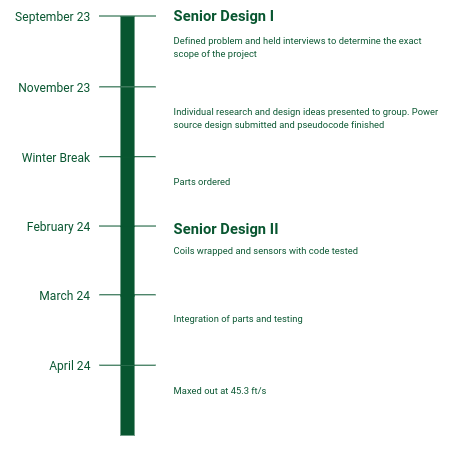

Coil Gun
Mickipedia
This article is about project documentation for my senior design project
At Missouri S&T, every senior is required to take senior design. For my computer and eletrical department, one of the projects we could undertake was to build a coil gun. There were about 5 groups, of 4-5 members each. I along with 3 friends: Elijah Gross, Micah Johnson, and Carter Schaper created the team Velociraptors. The project stemmed two semesters
Introduction
Overview
The gun will be used in Missouri S&T’s ECE department to highlight the principles of STEM and to demonstrate an accurate, powerful, and educational piece for generating interest in future engineers. With the help of Dr. Zawodniok, Dr. Shamsi, and other professors in the department, we have an impressive project that we built from start to finish. The gun is extremely reproducible with its $750 price tag and can serve as a proof of concept capable of scaling to serve larger budgets. 
Background and problem statement
This project was proposed as a competition by the ECE department for senior design. The project initially was going to be a rail gun, but after looking at practicality, the scope was changed to create a coil gun. The parameters were released (will be discussed further below), and we were tasked with finding out more about the goals of the department. After several interviews with various professors and members, there was a clear need for this coil gun. With rising costs in traditional means of launching a projectile, along with environmental and health factors relating to gunpowder and lead, a new and less impactful way of shooting a projectile is in demand. There are several products out currently that cost thousands but have drawbacks. We want to create a portable and safe solution. To achieve this, there are 3 main goals set out for us. With this gun, we need to be accurate, powerful, and educational. To achieve these goals our project at the beginning encompassed investigating and researching into the design of a coil gun using fundamental properties learned in physics and circuitry design. Once parts were determined and ordered, rigorous performance testing was done on each part and during each stage of the design process. Once the gun was complete, even more testing followed which included over 100 test fires. Other groups have spent significantly more money and placed us at a disadvantage. To compete with the other groups, we maximized the efficiency of every part to level the field. The design project began on the 13th of September, and the product demonstration was on April 11th. The product was shown in front of the other students and the department as we were the only group to have a functioning coil gun. The commercialization and advanced weaponization of the coil gun will be out of the scope of this project.
Our problem statement: Design a safe and professional coilgun for the department to use as a tool to motivate and excite future electrical and computer engineers
Research
Existing Solutions
Part Considerations
Design
Part Selection
Implementation
Roadblocks
Final Design
Future work